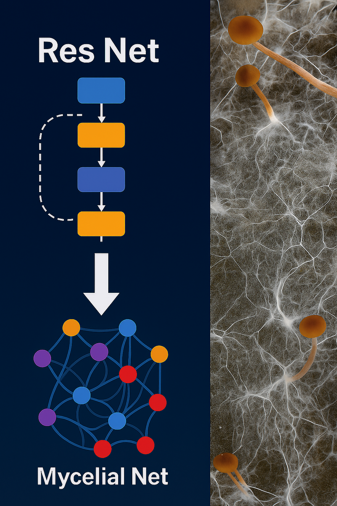
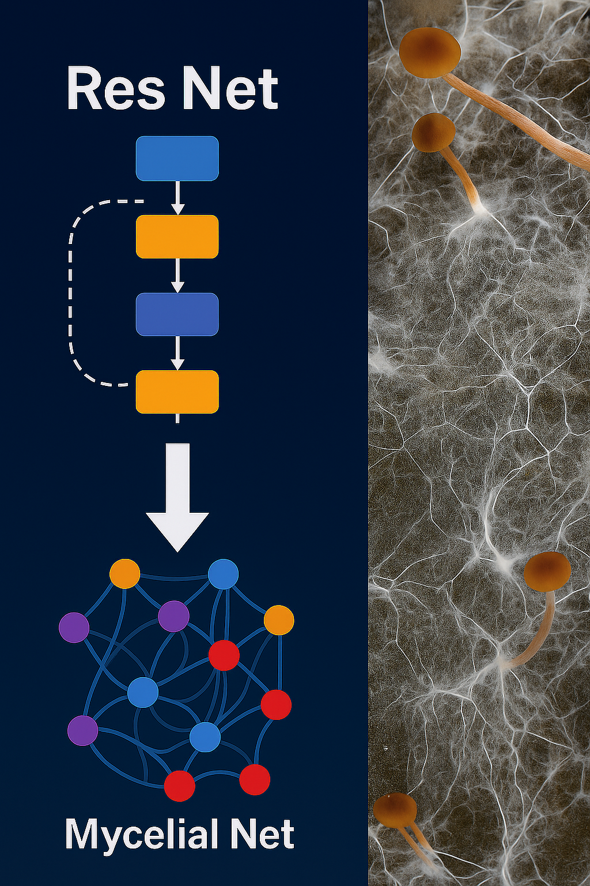
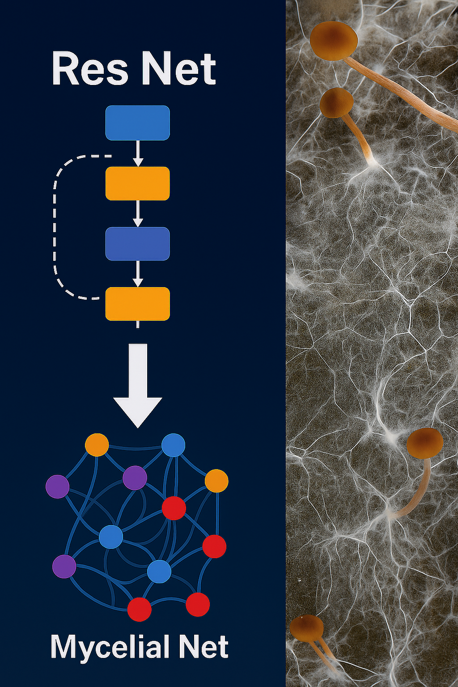

Consulenze in Geofisica, IA, Neuroscienze e Modelli Bio-Ispirati
Chi sono
Geofisico, ricercatore, innovatore nel campo dell'intelligenza artificiale, autore di nuovi paradigmi bio-ispirati come MycelialNet, e sviluppatore di approcci multidisciplinari che connettono geoscienze, neuroscienze, arte e filosofia.

Attività e Linee di Ricerca
Modelli bio-ispirati e reti neurali di nuova generazione (MycelialNet)
Ottimizzazione stocastica e reinforcement learning dopaminergico
Approcci predittivi e prescrittivi multidisciplinari
Analisi audio-visiva di segnali naturali e altri dati
Filosofia della Complessità, tecnologia e creatività
Formazione professionale per manager e tecnici su IA e Machine Learning (classico e bio-ispirato)
Modelli AI Bio-Ispirati e MycelialNet
I modelli di Intelligenza Artificiale bio-ispirati riproducono principi organizzativi presenti in natura — come le reti di micelio dei funghi — per ottenere sistemi di apprendimento più adattivi, resilienti e capaci di auto-organizzarsi. MycelialNet, da me sviluppato, è un paradigma che integra connessioni dinamiche, ridondanza intelligente e auto-consapevolezza computazionale per migliorare stabilità, efficienza e capacità predittive.
Rispetto ai modelli tradizionali, questi approcci introducono vantaggi pratici come maggiore robustezza al rumore, miglior generalizzazione, adattabilità ai dati complessi e possibilità di ridurre costi computazionali attraverso strutture di rete più naturali e meno rigide.
Pubblicazioni
Le mie pubblicazioni scientifiche complete sono consultabili attraverso i seguenti profili:
 
